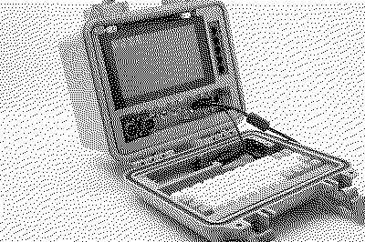
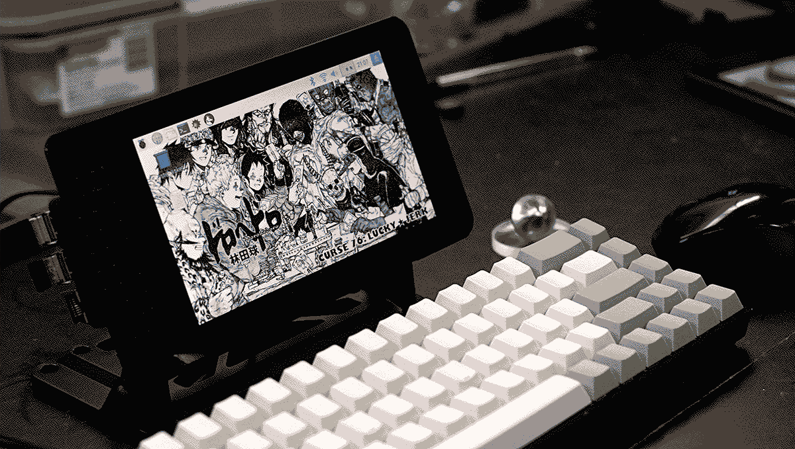
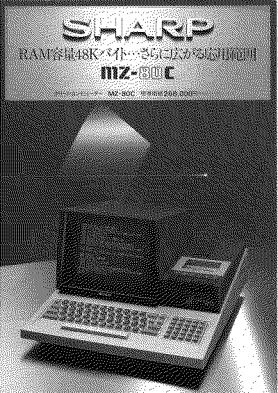

2023-01-20
The bicycle might be humanity's greatest achievement when it comes to mechanical inventions, of course following on from the invention of the wheel. Why it is such a special invention is quite clear and to me. The main reason is that it heightens the physical capabilities of this fragile, slow, and weak body (only speaking for myself) that is carrying its very engine of invention, the brain, closer to the height of other similarly sized animals' capacity for speed and distance. Once again, only through the power of the human body. With this in mind I want to share some opinions quite bluntly. The electric scooter and electric bicycle is an abomination of this world and through its horrid existence we are lowered to the very depths of the demon world and these inventions are nothing but small icicles on top of an ice berg of unnecessary and ultimately harmfull excess that will lead to the fall of all we hold dear. Or something like that.
Anyway, apologies for that, moving on. This series of articles will not be related to bicycles in any way whatsoever. The purity and ingenuity of the bicycle as a mechanical invention will, however, serve as a wonderful and inspiring simile for the actual subject of these articles which is my attempt to change the way I use my computer.
I think one of the things that really separates us from the high primates is that we’re tool builders. I read a study that measured the efficiency of locomotion for various species on the planet. The condor used the least energy to move a kilometer. And, humans came in with a rather unimpressive showing, about a third of the way down the list. It was not too proud a showing for the crown of creation. So, that didn’t look so good. But, then somebody at Scientific American had the insight to test the efficiency of locomotion for a man on a bicycle. And, a man on a bicycle, a human on a bicycle, blew the condor away, completely off the top of the charts. And that’s what a computer is to me. What a computer is to me is it’s the most remarkable tool that we’ve ever come up with, and it’s the equivalent of a bicycle for our minds.” - Steve Jobs
Now, the Macbook Pro I use for work is quite an amazing piece of hardware but likening it to a bicycle feels very wrong. I'm not sure what I would liken it to and, to be honest, I'm not even particularly interested in writing about it. It is what it is, a modern laptop with whatever it is that modern laptops usually have.
Instead of going deeply into the reasons for my dissatisfaction with mainstream modern computing solutions I will instead look forward to what my bare necessities are and from those necessities go into my proposed solution.
The plan is currently to put 9front on a Raspberry Pi and use it for:
To begin with, this will be a desktop computer being constantly plugged into a monitor with a corded mouse and keyboard. The long term goal is to build a fully functioning solar-powered Cyberdeck that allows me to do the stuff listed above at a local coffee shop without access to a power outlet. I currently have no idea how to do most of the things I'll need to do for this to work but... I have to start somewhere.
Looking forward to this project! Concluding this first article with some images and links that inspired the project.



Plan 9: Setting up 9front on a Raspberry Pi
---